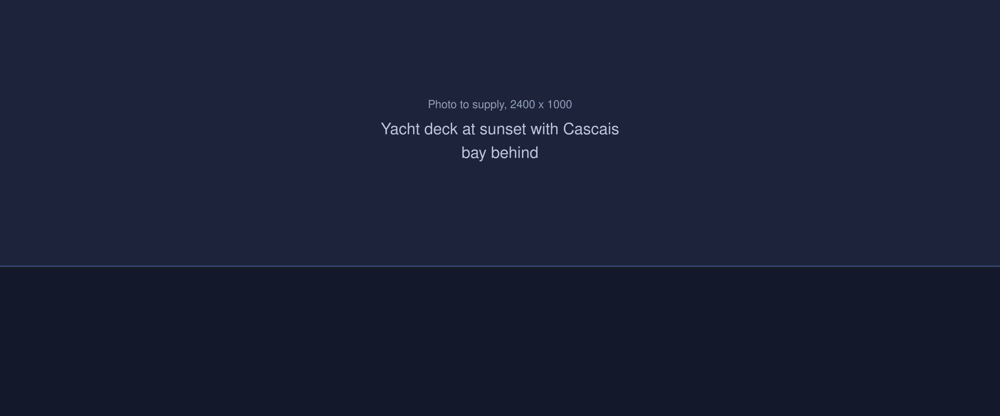
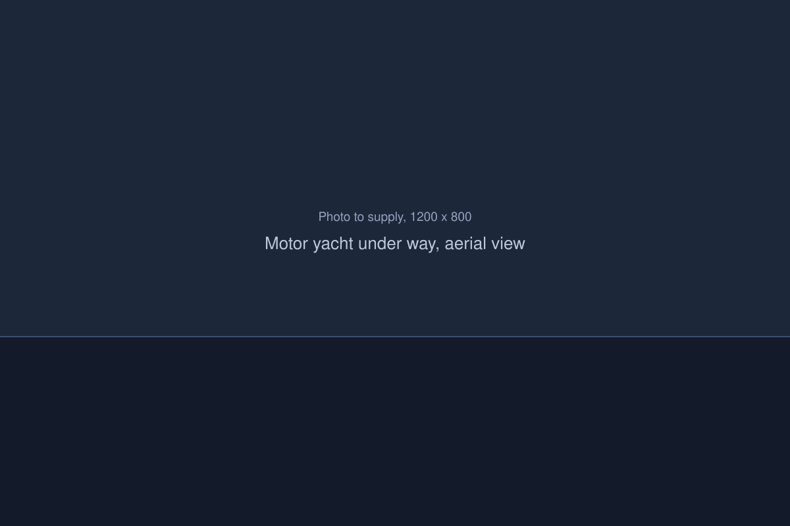

Aluguer de iates e barcos
Um dia no mar com skipper e tripulação, de uma enseada tranquila na Arrábida a um jantar ao largo de Cascais.
Para quem é
- Famílias e amigos que querem um dia privado no mar
- Empresas que recebem clientes ou uma pequena equipa a bordo
- Hotéis e concierges que acrescentam um dia no mar a uma estadia
- Organizadores que preparam chegadas por mar para um casamento ou evento
O que está incluído
- Iate ou barco, skipper e tripulação
- Combustível para o itinerário combinado
- Equipamento de segurança e seguro de passageiros
- Água, refrigerantes e toalhas
- Catering, chef ou brinquedos náuticos, a pedido
Onde navegamos
- Lisboa e Cascais
- O Tejo ao pôr do sol, a costa de Cascais, almoço ancorado.
- Arrábida e Tróia
- Água transparente, enseadas abrigadas e golfinhos no estuário do Sado.
- Algarve
- Grutas e falésias entre Lagos e Albufeira, a partir de Vilamoura ou Portimão.
A frota
Tipos de embarcação apresentados como exemplo. A embarcação, a licença e a tripulação são confirmadas no orçamento.
-

Iate a motor
- Lugares
- Até 12 convidados
- Uso habitual
- Dia inteiro ou vários dias
- Ideal para
- Cruzeiro costeiro com almoço a bordo
-

Catamarã à vela
- Lugares
- Até 12 convidados
- Uso habitual
- Meio dia ou dia inteiro
- Ideal para
- Dias estáveis e espaçosos para famílias e grupos
-

Lancha rápida
- Lugares
- Até 8 convidados
- Uso habitual
- Uma a três horas
- Ideal para
- Transfers para Tróia ou para um restaurante de praia
Perguntas frequentes
Preciso de carta ou de experiência de navegação?
Não. Todos os alugueres incluem skipper profissional e tripulação quando a embarcação o exige.
E se o mar estiver demasiado agitado?
O skipper decide no próprio dia. Propomos um itinerário abrigado ou uma nova data, sem custo adicional.
Podemos comer a bordo?
Sim. Tratamos do catering ou de um chef, ou reservamos mesa num restaurante a que chega de lancha.
Posso combinar o dia com um voo ou transfer?
Sim. Um carro ou helicóptero pode levá-lo à marina e trazê-lo de volta, numa única reserva.
Diga-nos para onde e quando
Respondemos com opções e preço fechado, normalmente em duas horas.